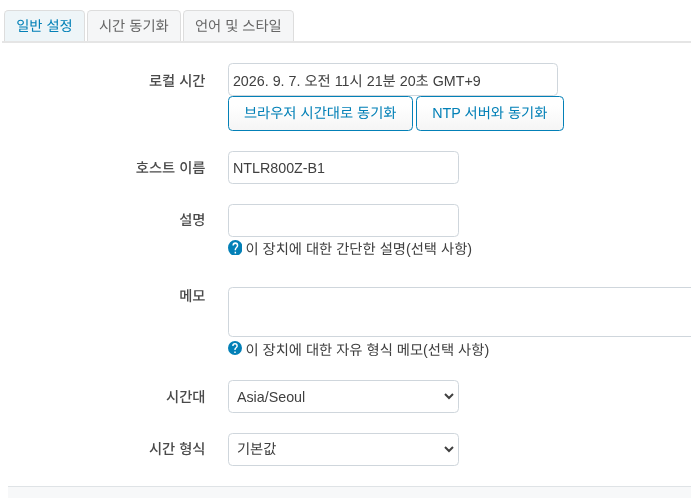
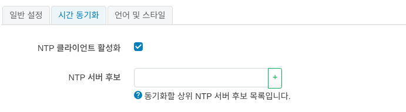
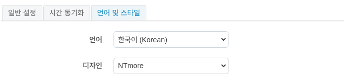
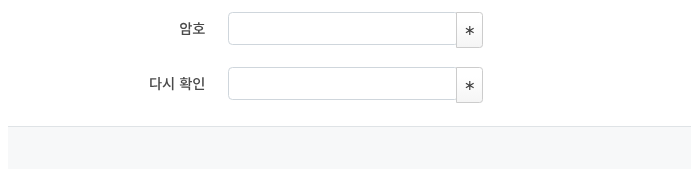
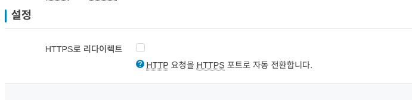
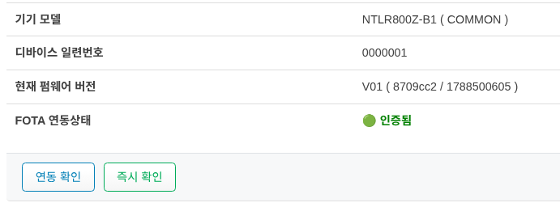
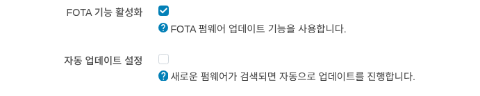
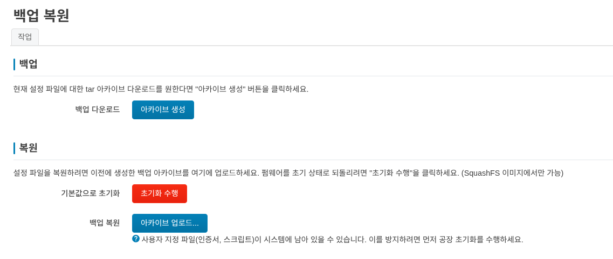
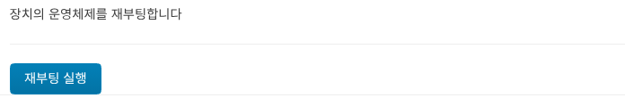

시스템
일반 설정


로컬 시간 : 현재 디바이스의 시간을 확인할 수 있습니다.
브라우저 시간대로 동기화: 현재 사용중인 환경에 브라우저의 시간에 맞춥니다.
NTP 서버와 동기화 : 시간 동기화 메뉴에 설정된 NTP 서버와 동기화 합니다.
호스트 이름: 라우터 디바이스의 호스트명을 정할수 있습니다.
설명: 디바이스에 대한 설명을 입력할 수 있습니다.(선택사항)
메모: 디바이스에 대한 메모를 입력할 수 있습니다.(선택사항)
시간대: 디바이스의 시간대를 설정할 수 있습니다.
시간 형식: 디바이스의 시간 형식을 설정할 수 있습니다. 12시간제와 24시간제를 지원합니다.
시간 동기화


NTP에 관련한 설정을 할 수 있습니다.
NTP 서버 후보에 NTP 서버 주소를 입력하고, 저장 및 적용 버튼을 클릭하면 NTP 서버와 동기화가 수행됩니다.
언어 및 스타일


언어와 스타일을 설정 합니다. 언어는 한국어 와 영어 를 지원하며, 스타일은 NTmore 기본 theme를 제공합니다.
관리
라우터 암호


디바이스의 패스워드를 변경 합니다.
HTTP(S) 접속


관리화면 접속시 HTTP 접속을 HTTPS 접속으로 리디이렉션 합니다.
시스템 업데이트
디바이스에 대한 업데이트 설정을 확인하고, 새로운 펌웨어가 있는 경우 업데이트를 수행할 수 있습니다.
정보


기기 모델
디바이스 일련번호
현재 펌웨어 버전 : 현재 펌웨어 버전을 확인할 수 있습니다. (revision/build date) 형식으로 구성 되어 있습니다.
FOTA 연동상태 : 현재 FOTA 서버와의 연동 상태를 확인할 수 있습니다.
재부팅 실행 버튼을 클릭하면 FOTA 서버와의 연동 상태를 확인할 수 있습니다.
즉시 확인 버튼을 클릭하면 FOTA 서버에서 새로운 펌웨어가 있는지 확인할 수 있습니다.’
설정


FOTA 기능 활성화 : FOTA 펌웨어 업데이트 기능을 사용합니다. 만약 FOTA 기능을 사용하지 않으려면 체크를 해제하세요.
자동 업데이트 설정 : FOTA 서버에서 새로운 펌웨어가 있는 경우 자동으로 업데이트를 수행합니다. 만약 자동 업데이트를 사용하지 않으려면 체크를 해제하세요.
Backup / Restore config


작업
백업
현재 설정 파일에 대한 tar 아카이브 다운로드를 원한다면 아카이브 생성 버튼을 클릭하세요.
백업된 파일은 브라우저를 통해 PC에 다운로드 됩니다.
복원
- 기본값으로 초기화
설정 파일을 초기 상태로 되돌리려면
초기화 수행을 클릭하세요.초기화 수행후에는 시스템이 재부팅 됩니다.
- 백업 복원
설정 파일을 복원하려면 이전에 생성한 백업 아카이브를 아카이브 업로드 에 업로드 하세요.
재부팅후에는 시스템이 재부팅 됩니다.
재부팅


디바이스를 재시작 합니다. 재부팅 실행 버튼을 클릭하면 시스템이 재부팅 됩니다.